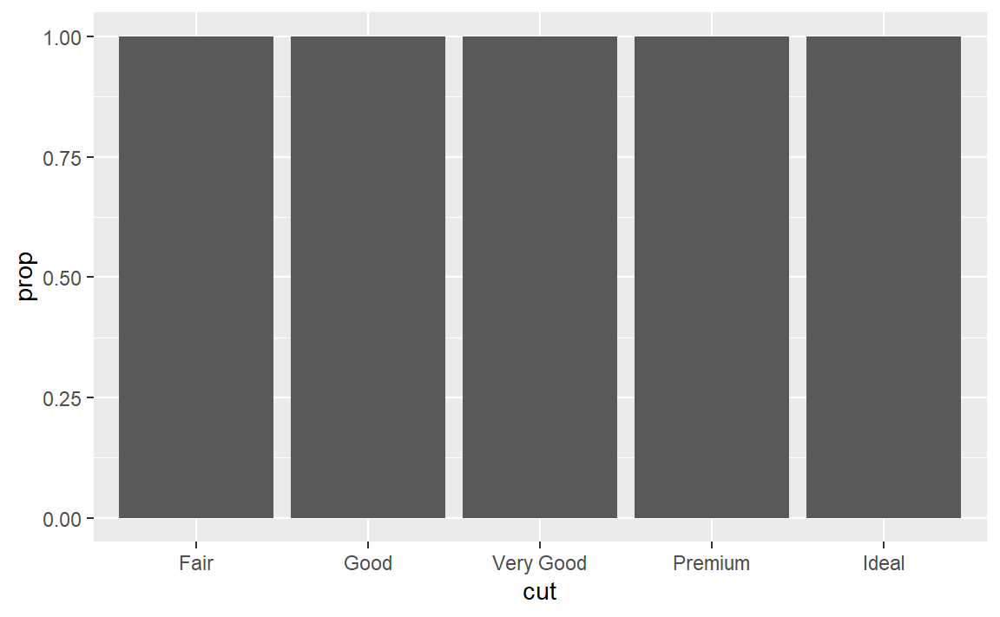
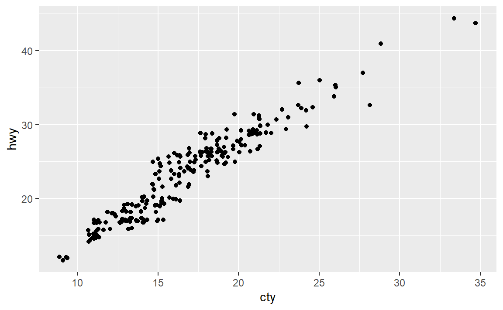

3 Data visualisation
3.1 Introduction
我们将要学习的第一套工具，ggplot2的程序包，用于绘图。
首先加载tidyverse
library(tidyverse)
#> -- Attaching packages ----------------
#> √ ggplot2 3.3.2 √ purrr 0.3.4
#> √ tibble 3.0.3 √ dplyr 1.0.2
#> √ tidyr 1.1.1 √ stringr 1.4.0
#> √ readr 1.3.1 √ forcats 0.5.0
#> -- Conflicts -------------------------
#> x dplyr::filter() masks stats::filter()
#> x dplyr::lag() masks stats::lag()3.2 First steps
先绘制一个mpg数据框里边的引擎大小(displ)-燃油效率(hwy)散点图

可以看到，绘图的模板命令大致是
这是在生成一个空白图层，指定数据。
这是在空白图层上方继续加图层，比如前面的geom_point就是加上散点图图层。mapping是映射，是将数据框的属性映射成图形属性，常见的我们还用aes()，这是将将数据框的属性映射成x,y轴变量。
3.2.1 Exercises
- 运行
ggplot(data = mpg)，你会看到什么？
显然，是一个空白的图层。
- 数据集
mpg中有多少行？多少列？
str(mpg)
#> tibble [234 x 11] (S3: tbl_df/tbl/data.frame)
#> $ manufacturer: chr [1:234] "audi" "audi" "audi" "audi" ...
#> $ model : chr [1:234] "a4" "a4" "a4" "a4" ...
#> $ displ : num [1:234] 1.8 1.8 2 2 2.8 2.8 3.1 1.8 1.8 2 ...
#> $ year : int [1:234] 1999 1999 2008 2008 1999 1999 2008 1999 1999 2008 ...
#> $ cyl : int [1:234] 4 4 4 4 6 6 6 4 4 4 ...
#> $ trans : chr [1:234] "auto(l5)" "manual(m5)" "manual(m6)" "auto(av)" ...
#> $ drv : chr [1:234] "f" "f" "f" "f" ...
#> $ cty : int [1:234] 18 21 20 21 16 18 18 18 16 20 ...
#> $ hwy : int [1:234] 29 29 31 30 26 26 27 26 25 28 ...
#> $ fl : chr [1:234] "p" "p" "p" "p" ...
#> $ class : chr [1:234] "compact" "compact" "compact" "compact" ...利用str函数，可以得到数据集mpg中有234行11列。
- 变量
drv的意义是什么？使用?mpg命令阅读帮助文件以找出答案。
通过阅读帮助文档可以知道
drv: the type of drive train, where f = front-wheel drive, r = rear wheel drive, 4 = 4wd
即传动系的类型，f表示前轮驱动，r表示后轮驱动，4表示四轮驱动。
- 使用
hwy和cyl绘制一张散点图。

啊，这奇怪的图形。
- 如果使用
class和drv绘制散点图，会发生什么情况？为什么这张图没什么用处？
会出现很多点重合的现象，这是这张图没什么用处的原因吗？但是自我感觉还是保留了些许信息，但的确被压缩了很多。
3.3 Aesthetic mappings
我们在前面学习了如何把数据框属性映射为x,y轴，实际上还可以映射其他图形属性。
在引擎大小(displ)-燃油效率(hwy)散点图中增加多一个映射，将点的颜色映射为变量class
类似于点的颜色，还有的图形属性为：
点的透明度
alpha点的大小
size，单位为毫米点的形状
shape，ggplot2只能同时使用6种形状还可以通过
?geom_point来查看
除了映射图形属性让ggplot2帮忙设置，还可以手动为几何对象设置图形属性。
 上图会将所有点都绘制成蓝色，因为我们并没有对点的颜色建立映射，而是直接设置。这与前面的图不同。
上图会将所有点都绘制成蓝色，因为我们并没有对点的颜色建立映射，而是直接设置。这与前面的图不同。
3.3.1 Exercises
- 以下这段代码有什么错误？为什么点不是蓝色的？

这是因为这段代码把字符串常量当作数据框属性映射为点的颜色，由于各点的值都是常量“blue”故大家的颜色也一样，为默认的第一种颜色：红色。
事实上，
不论那个字符串是什么，甚至不是颜色的字符串也没有什么影响的。
(2)mpg中的哪些变量是分类变量？哪些变量是连续变量？（提示：输入?mpg来阅读这个数据集的文档。）当调用mpg时，如何才能看到这些信息？
当然可以阅读文档，但也可以
str(mpg)
#> tibble [234 x 11] (S3: tbl_df/tbl/data.frame)
#> $ manufacturer: chr [1:234] "audi" "audi" "audi" "audi" ...
#> $ model : chr [1:234] "a4" "a4" "a4" "a4" ...
#> $ displ : num [1:234] 1.8 1.8 2 2 2.8 2.8 3.1 1.8 1.8 2 ...
#> $ year : int [1:234] 1999 1999 2008 2008 1999 1999 2008 1999 1999 2008 ...
#> $ cyl : int [1:234] 4 4 4 4 6 6 6 4 4 4 ...
#> $ trans : chr [1:234] "auto(l5)" "manual(m5)" "manual(m6)" "auto(av)" ...
#> $ drv : chr [1:234] "f" "f" "f" "f" ...
#> $ cty : int [1:234] 18 21 20 21 16 18 18 18 16 20 ...
#> $ hwy : int [1:234] 29 29 31 30 26 26 27 26 25 28 ...
#> $ fl : chr [1:234] "p" "p" "p" "p" ...
#> $ class : chr [1:234] "compact" "compact" "compact" "compact" ...
summary(mpg)
#> manufacturer model displ year
#> Length:234 Length:234 Min. :1.60 Min. :1999
#> Class :character Class :character 1st Qu.:2.40 1st Qu.:1999
#> Mode :character Mode :character Median :3.30 Median :2004
#> Mean :3.47 Mean :2004
#> 3rd Qu.:4.60 3rd Qu.:2008
#> Max. :7.00 Max. :2008
#> cyl trans drv cty
#> Min. :4.00 Length:234 Length:234 Min. : 9.0
#> 1st Qu.:4.00 Class :character Class :character 1st Qu.:14.0
#> Median :6.00 Mode :character Mode :character Median :17.0
#> Mean :5.89 Mean :16.9
#> 3rd Qu.:8.00 3rd Qu.:19.0
#> Max. :8.00 Max. :35.0
#> hwy fl class
#> Min. :12.0 Length:234 Length:234
#> 1st Qu.:18.0 Class :character Class :character
#> Median :24.0 Mode :character Mode :character
#> Mean :23.4
#> 3rd Qu.:27.0
#> Max. :44.0- 将一个连续变量映射为
color、size和shape。对分类变量和连续变量来说，这些图形 属性的表现有什么不同？
实践是检验真理的唯一标准，我们试试看：
前两个还好，后面这个形状是直接报错无法映射了。毕竟color还有size都是可以渐变也即可以建立连续映射到连续的，但是形状就是铁定的离散值了，无法与连续值建立映射。
(4)如果将同一个变量映射为多个图形属性，会发生什么情况？
试试看：
ggplot(data = mpg) +
geom_point(
mapping = aes(x = displ, y = hwy, colour = class, size = class)
)
#> Warning: Using size for a discrete variable is not advised.咦，会叠加的耶。
(5)stroke这个图形属性的作用是什么？它适用于哪些形状？（提示：使用?geom_point命令。）
但是里面没有具体涉及。实践一下
查阅https://ggplot2.tidyverse.org/articles/ggplot2-specs.html#colour-and-fill-1， stroke这个图形属性是用于21-24形状的点的描边大小。
- 如果将图形属性映射为非变量名对象，比如
aes(color = displ < 5)，会发生什么情况？

嗯，还是可以映射成图形属性的。
3.4 Common problems
这样子是错的
加号要放在代码的末尾。
3.5 Facets分面
一个参数的分面：利用函数facet_wrap()。例如：

每一个“面”都是属性class的一个值，所以传递给facet_wrap()的变量应该是离散型的。参数nrow表示分面的行数。
两个参数的分面：利用函数facet_grid()。例如：

每一个面都由(cyl,drv)决定。

想要取消在行的维度分面，用.替代属性。
3.5.1 Exercises
- 如果使用连续变量进行分面，会发生什么情况？
看一个参数的：
可以看到它会把连续变量的所有取值都绘制分面了。
- 在使用
facet_grid(drv ~ cyl)生成的图中，空白单元的意义是什么？它们和以下代码 生成的图有什么关系？

而

这个图只是对变量drv,cyl绘制分面，而上图是对这两个变量绘制散点图。
- 以下代码会绘制出什么图？ . 的作用是什么？
这两幅图实际上是按单个变量按列或行分面，与facet_warp()不同之处：
facet_warp()对单个变量分面不会考虑按行或者按列。
- 查看本节的第一个分面图，

与使用图形属性相比，使用分面的优势和劣势分别是什么？如果有一个更大的数据集，你将如何权衡这两种方法的优劣？
使用分面的优势：可以更好地看清，在固定某个变量（上图的class）时其余两个变量的关系。劣势就是三个变量的共同作用不太好看清了。
所以我觉得，当我们要考虑多个变量的共同作用、相互关系时可以考虑使用图形属性，当我们想要固定某个变量考虑其他变量时可以考虑分面。
- 阅读
?facet_wrap的帮助页面。nrow和ncol的功能分别是什么？还有哪些选项可以控 制分面的布局？为什么函数facet_grid()没有变量nrow和ncol？
nrow和ncol的功能分别是控制分面图的行列个数。函数facet_grid()的行列数是依赖于分面变量的取值数，所以无法自定义。
- 在使用函数
facet_grid()时，一般应该将具有更多唯一值的变量放在列上。为什么这么做呢？
增加分面图的行数，从而每幅图看起来更好看、清晰，吧。
3.6 几何对象
几何对象是图中用来表示数据的几何图形对象，在ggplot2中使用几何对象函数来实现，比如
geom_point(),geom_smooth()等等，对于同一个数据对象，使用什么样的几何对象来展示，这估计也是一个大学问啊。
ggplot2中每个几何对象函数都有mapping参数，但并不意味着可以任意设置所有的图形属性，比如geom_point()就没有linetype属性。每个几何对象的详情可以使用帮助?geom_point。
3.6.1 分组绘图
使用单一几何对象实现分组绘图：
- 将一个图形属性映射为一个离散变量，自动添加图例（巨方便）
ggplot(data = mpg) +
geom_smooth(mapping = aes(x = displ, y = hwy, color = drv))
#> `geom_smooth()` using method = 'loess' and formula 'y ~ x'- 使用
group参数
3.6.2 多个几何对象
想要在一幅图上显示多个几何对象，只需要把图层不断叠加。例如：
ggplot(data = mpg) +
geom_smooth(mapping = aes(x = displ, y = hwy))+
geom_point(mapping = aes(x = displ, y = hwy))
#> `geom_smooth()` using method = 'loess' and formula 'y ~ x'可以看到，两个几何对象的映射是重复的，可以用全局映射替代。即
ggplot(data = mpg,mapping = aes(x = displ, y = hwy))+
geom_point()+
geom_smooth()
#> `geom_smooth()` using method = 'loess' and formula 'y ~ x'这样修改全局映射就会对所有几何对象有影响。
关于全局映射与局部映射：全局映射会作用与所有几何对象，局部映射只会作用与当前几何对象，并且局部映射可以拓展（不冲突时）或者覆盖全局映射（冲突时）。对于全局指定数据集以及局部指定数据集也类似。例如，
ggplot(data = mpg, mapping = aes(x = displ, y = hwy)) +
geom_point(mapping = aes(color = class)) +
geom_smooth(
data = filter(mpg, class == "subcompact"),
se = FALSE
)
#> `geom_smooth()` using method = 'loess' and formula 'y ~ x'上例中，全局指定数据集与局部指定数据集冲突，所以几何对象geom_smooth只绘制了局部指定的数据集。局部映射color = class与全局映射不冲突，所以几何对象geom_point被三个映射作用。
3.6.3 练习
- 在绘制折线图、箱线图、直方图和分区图时，应该分别使用哪种几何对象？
参考： https://ggplot2.tidyverse.org/reference/index.html。
- 在脑海中运行以下代码，并预测会有何种输出。接着在R中运行代码，并检查你的预测是否正确。
预测：对数据中变量drv不同值分别绘制散点图并绘制该散点图的平滑拟合曲线。
实际：
ggplot(
data = mpg,
mapping = aes(x = displ, y = hwy, color = drv)
) +
geom_point() +
geom_smooth(se = FALSE)
#> `geom_smooth()` using method = 'loess' and formula 'y ~ x'
嗯，一样的。
show.legend = FALSE的作用是什么？删除它会发生什么情况？你觉得我为什么要在本 章前面的示例中使用这句代码？
作用是不显示图例，删除它就显示图例呗。为了体现将一个图形属性映射为一个离散变量时ggplot2可以自动添加图例。
geom_smooth()函数中的se参数的作用是什么？
可以看到se参数的作用是控制是否展示拟合曲线的置信区间。
- 以下代码生成的两张图有什么区别吗？为什么？
ggplot(data = mpg, mapping = aes(x = displ, y = hwy)) +
geom_point() +
geom_smooth()
#> `geom_smooth()` using method = 'loess' and formula 'y ~ x'
ggplot() +
geom_point(
data = mpg,
mapping = aes(x = displ, y = hwy)
) +
geom_smooth(
data = mpg,
mapping = aes(x = displ, y = hwy)
)
#> `geom_smooth()` using method = 'loess' and formula 'y ~ x'
一样的呀，不就是把全局变量放在局部变量那里吗…
- 自己编写R代码来生成以下各图。
ggplot(data = mpg, mapping = aes(x = displ, y = hwy)) +
geom_point() +
geom_smooth(se=F)
#> `geom_smooth()` using method = 'loess' and formula 'y ~ x'ggplot(data = mpg, mapping = aes(x = displ, y = hwy)) +
geom_point() +
geom_smooth( mapping = aes(group=drv),se=F)
#> `geom_smooth()` using method = 'loess' and formula 'y ~ x'ggplot(data = mpg, mapping = aes(x = displ, y = hwy,color=drv)) +
geom_point() +
geom_smooth(se=F)
#> `geom_smooth()` using method = 'loess' and formula 'y ~ x'ggplot(data = mpg, mapping = aes(x = displ, y = hwy)) +
geom_point(mapping = aes(color=drv)) +
geom_smooth(se=F)
#> `geom_smooth()` using method = 'loess' and formula 'y ~ x'
3.7 统计变换
很多图形绘制的是数据集的原始数据，比如散点图,它把原始数据中已有的变量映射到图形属性中。
另外一些图形则可以绘制那些计算出的新数据，比如条形图。例如，

y轴的count变量是原始数据中所没有的，是通过统计变换（stat）后得到的。所以对于这些函数，它们作用的过程可以分为两步，先是处理原始数据集，后是将处理后的数据集的变量映射到图形属性。但我们往往不需要关注底层统计变换的实现过程。
3.7.1 底层实现
当我们需要关注底层实现过程的时候，我们需要知道：
通过查看
stat参数的默认值，可以知道几何对象函数使用了哪种统计变换函数。统计函数会计算出不止一个新变量，例如可以通过?geom_bar的Computed variables一节看到。统计变换函数指的是实现某种统计变换的函数，例如
count->stat_count()。通常来说，几何对象函数和统计变换函数可以互换使用，如
geom_bar与stat_count，因为每个几何对象函数都有一个默认统计变换，每个统计变换函数都有一个默认几何对象
3.7.2 显式使用
当我们想要显式使用某种统计变换时，
- 想要覆盖默认的统计变换：更改
stat参数值，并指定各图形属性的映射。例
demo <- tribble(
~a, ~b,
"bar_1", 20,
"bar_2", 30,
"bar_3", 40
)
ggplot(data = demo) +
geom_bar(
mapping = aes(x = a, y = b), stat = "identity"
)
ggplot(data = demo) +
geom_bar(
mapping = aes(x = a)
)
其中，stat = "identity"表示不使用统计变换（即使用恒等变换）。
- 想要覆盖从统计变换生成的变量到图形属性的默认映射。
前面我们说过，统计函数会计算出不止一个新变量，我们可以显示地更改变量到图形属性的默认映射，例如，默认的：
stat_count计算的变量除了count（默认映射）还有prop，更改一下映射：
可以看到y = ..prop..而不是y = prop估计是为了表明这个prop是统计变换计算出来的中间变量，而不是原始数据中的变量。验证一下：
 可以得到默认的绘图。
可以得到默认的绘图。
- 想要在代码中强调统计变换。而非几何对象。如
ggplot(data = diamonds) +
stat_summary(
mapping = aes(x = cut, y = depth),
fun.min = min,
fun.max = max,
fun = median
)
3.7.3 练习
stat_summary()函数的默认几何对象是什么？不使用统计变换函数的话，如何使用几何对象函数重新生成以上的图？
可以看到geom = "pointrange"，从而默认的几何对象为geom_pointrange。利用pointrange生成图如下：
ggplot(data = diamonds) +
geom_pointrange(
mapping = aes(x = cut, y = depth),
stat = "summary",
fun.min = min,
fun.max = max,
fun = median
)
默认是不做统计变换，所以要显示指定一下参数stat。
geom_col()函数的功能是什么？它和geom_bar()函数有何不同？
geom_col()函数默认不使用统计变换，即需要把原始数据中某个变量映射到y轴上。geom_bar()函数默认使用统计变换。
- 多数几何对象和统计变换都是成对出现的，总是配合使用。仔细阅读文档，列出所有 成对的几何对象和统计变换。它们有什么共同之处？
参考：https://ggplot2.tidyverse.org/reference/index.html 。名字大多类似？
stat_smooth()函数会计算出什么变量？哪些参数可以控制它的行为？
y：预测值，ymin,ymax：y均值的置信区间，se：标准误差。嗯…太多了…
- 在比例条形图中，我们需要设定
group = 1，这是为什么呢？换句话说，以下两张图会 有什么问题？
ggplot(data = diamonds) +
geom_bar(mapping = aes(x = cut, y = ..prop..))
ggplot(data = diamonds) +
geom_bar(
mapping = aes(x = cut, fill = color, y = ..prop..)
)
你需要把所有数据放在一个组里面考虑，否则对于cut的每一个值分为一组，prop值都会是1。只需要把一个常量映射为group参数即可。

3.8 位置调整
3.8.1 条形图上色
使用color或者fill图形属性
ggplot(data = diamonds) +
geom_bar(mapping = aes(x = cut, color = cut))
ggplot(data = diamonds) +
geom_bar(mapping = aes(x = cut, fill = cut))可以看到，color为边框上色，fill为图形填充颜色。
改变fill映射的变量，可以得到分块堆砌条形图。
3.8.2 位置调整功能
这是由position参数设定的位置调整功能自动完成的，默认为stack（堆砌），还有其余值为identity,fill,dodge。
position = "identity"：将每个对象直接显示在图中，在图层上进行堆砌。这种方式不太适合条形图，因为条形会彼此重叠。为了让重叠部分能够显示出来，我们可以设置alpha参数为一个较小的数，从而使得条形略微透明；或者设定fill = NA，让条形完全透明：
ggplot(
data = diamonds,
mapping = aes(x = cut, fill = clarity)
) +
geom_bar(alpha = 1/5, position = "identity")
ggplot(
data = diamonds,
mapping = aes(x = cut, color = clarity)
) +
geom_bar(fill = NA, position = "identity")
position = "fill"：与堆叠相似，但每组堆叠条形具有同样的高度，因此这种条形图可以非常轻松地比较各组间的比例：
position = "dodge"将每组中的条形依次并列放置，这样可以非常轻松地比较每个条形 表示的具体数值：
position = "jitter"：虽然不适合条形图，但非常适合散点图。它为每个数据点添加一个很小的随机扰动，这样就可以将重叠的点分散开来。用损失精确性的方法提高图形的启发性，我觉得想法非常棒呀，毕竟图形化本身就是在用降低精确性来提高启发性。
3.8.3 练习
(1)以下图形有什么问题？应该如何改善？
重叠点太多，加入随机扰动看看：

效果要好一点。
(2)geom_jitter()使用哪些参数来控制抖动的程度？
width,height，但不太清楚作用机制…
(3)对比 geom_jitter() 与 geom_count()。
geom_jitter()通过对数据点加随机扰动把重叠点分开，而 geom_count()对于重叠点，将重叠点计数映射到改区域点的大小。即
(4)geom_boxplot()函数的默认位置调整方式是什么？创建mpg数据集的可视化表示来演示一下。
默认位置调整方式是dodge2。
3.9 坐标系
coord_flip()交换x轴，y轴；coord_quickmap()为地图设置合适的纵横比；coord_polar()采用极坐标；
3.9.1 练习
(1)使用coord_polar()函数将堆叠式条形图转换为饼图。
(2)labs()函数的功能是什么？阅读一下文档。
修改标签。
(3)coord_quickmap()函数和 coord_map() 函数的区别是什么？
参考：https://ggplot2.tidyverse.org/reference/coord_map.html
(4)下图表明城市和公路燃油效率之间有什么关系？为什么coord_fixed()函数很重要？geom_abline() 函数的作用是什么？
正相关（线性）。可以使数据点（看起来）成斜率为1或-1，否则就是
geom_abline() 函数的作用是绘制参考直线。
3.10 图形分层语法
模板语法：
ggplot(data = <DATA>) +
<GEOM_FUNCTION>(
mapping = aes(<MAPPINGS>),
stat = <STAT>,
position = <POSITION>
) +
<COORDINATE_FUNCTION> +
<FACET_FUNCTION>如果构建一个图形？
1.需要有一个数据集<DATA>
2.（通过统计变换<STAT>）将其转换为想要显示的信息
3.选择一个几何对象<GEOM_FUNCTION>来表示转换后的数据中的每个观测值，
4.选择几何对象的图形属性来表示数据中的变量，这会将每个变量的值映射<MAPPINGS>为图形属性的水平。
5.选择放置几何对象的坐标系<COORDINATE_FUNCTION>
6.进一步调整几何对象在坐标系中的位置（位置调整<POSITION>），或者将图划分为多个子图（分面<FACET_FUNCTION>）
7.添加一个或多个附加图层进行拓展。